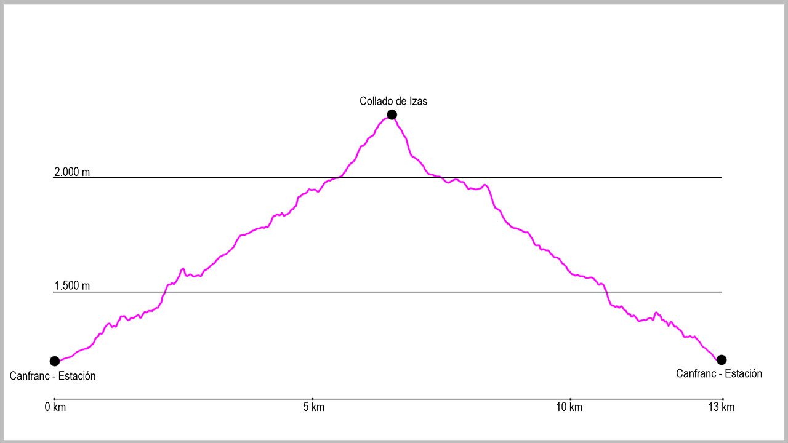

Desde el puente de la Estación de Canfranc, cogeremos la calle principal en dirección norte. Al llegar al final del pueblo seguiremos por el arcén derecho, y justo al pasar la boca española del Túnel de Somport sale un pequeño camino que va paralelo a la carrera. Lo tomaremos y, a escasos 200 metros, llegaremos a un primer puente que cruza el río Aragón y desde donde sale la pista que tomaremos en la parte inicial de la ruta. Una vez estemos en ella, no deberemos dejarla hasta el final de la misma. Varios cruces saldrán a nuestra derecha (Melancólicos o Casita Blanca), pero nosotros la seguiremos. Tras una primera curva de 180ª, la pista va cogiendo altura para llegar a una zona ya sin apenas bosque. Aquí volverá a hacer otras dos curvas de herradura para llevarnos a partir de este punto a dar vista a Coll de Ladrones.
Una vez llegados al fuerte, seguiremos la pista. Primero desciendo unos metros en dirección este, para poco después llegar a un cruce, que tomaremos a nuestra derecha de manera claramente ascendente. Este sendero es el que nos llevará hasta el punto de retorno de nuestra ruta.
Desde este punto vamos a recorrer tanto en la ida como en la vuelta el valle de Izas desde su final hasta la cabecera. El principio es algo incómodo, con varias zonas de subidas y bajadas antes de llegar a una pedrera que sortearemos sin mucha dificultad si no está mojada. En ella ganaremos rápidamente altura hasta llegar a donde se abre el valle. En estas campas seguiremos el camino marcado para atravesarlas. Al final de ellas los pies nos llevan a una senda bien marcada a nuestra izquierda, pero será muy importante seguir rectos. Si seguimos el camino, nos llevará enseguida al refugio de Iserias.
Justo al pasar el refugio, descenderemos brevemente hacia el cauce del río para llegar a un pequeño puente que cruzaremos para pasar a la margen derecha del río. Desde allí un antiguo camino nos conducirá en dirección este a remontar poco a poco el valle. Aunque el camino no está claro, si seguimos la margen y la dirección, no tendremos problema en llegar hasta el collado.
Volveremos a pasar por otro refugio de pastores, y poco después por una zona de piedras desde donde ya veremos nuestro objetivo, marcado con un reenvío de un telesquí de la estación de esquí de Formigal. Una vez en este punto solo nos quedará dibujar una media luna a nuestra izquierda en dirección al collado. La seguiremos y pronto estaremos en el punto de regreso.
La vuelta hasta el punto de inicio de la ruta será siguiendo el mismo trazado pero en la dirección opuesta.
